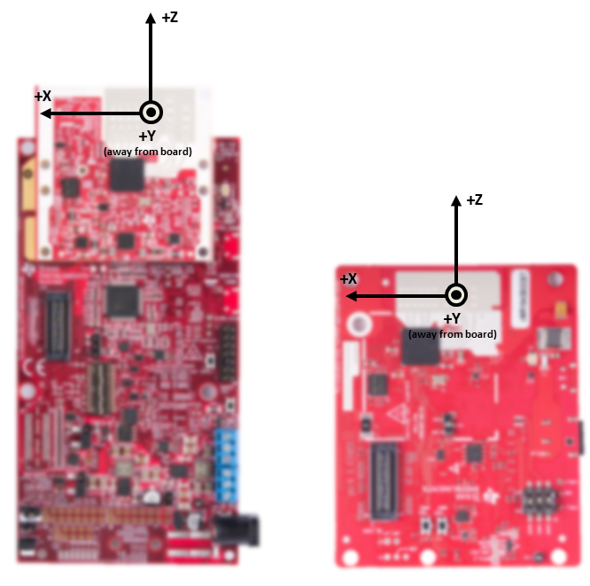

Overview
===========
This lab demonstrates the use of TI mmWave sensors to track and count people using the IWR6843ISK, IIWR6843ISK-ODS or IWR6843AOPEVM sensor module positioned in side-mount configuration (e.g. on a wall).
Detection and tracking algorithms run onboard the IWR6843 mmWave sensor and are used to localize people and track their movement.
In this demonstration, localization and tracking is performed upon any moving object in the scene;
With the 3D people counting software running on the IWR6843 chip, the mmWave sensor module outputs a data stream consisting of 3 dimensional point cloud information and a list of tracked objects which can be visualized using the PC based visualizer included in the toolbox.
This user guide covers the procedures to Flash, Run, and Compile the 3D people counting demo. For details regarding the demo software algorithms and implementation, please refer to the following documents available in the <a href="../../docs/" target="_blank">People Counting Lab docs directory</a>
* <a href="../../docs/3D_people_counting_demo_implementation_guide.pdf" target="_blank">3D People Counting Demo Software Implementation Guide</a>.
* <a href="../../docs/Tracking_radar_targets_with_multiple_reflection_points.pdf" target="_blank">Group Tracker Algorithm Implementation Guide</a>.
<img src="images/pplcount_overview_block2.png" width="450"/>
[[r! IWR6843 ES2.0 Only
This lab is only compatible with ES2.0 version of IWR6843. Check the device version on your IWR6843 using the on-chip device markings as shown below>
1. If line 4 reads `678A`, you have an ES2 device. In this case, this lab is compatible with your EVM.
2. If line 4 reads `60 GHZi`, you have an older ES1 device. In this case, the lab is NOT compatible with your EVM. ES2 IWR6843ISK/IWR6843ISK-ODS boards are orderable from the EVM link above.
<img src="images/iwr6843_silicon_revision.png" width="500"/>
]]
[[r! AoP ES2.0 EVM, Rev F or later only
The IWR6843 AoP version of this lab is only compatible with ES2.0 silicon and the corresponding EVM. Please ensure your EVM is the same as in the below image.
<img src="images/iwr6843aopevm1.png" width="300"/>
]]
Quickstart
===========
### Prerequisite 1
[[y! Run Out of Box Demo
Before continuing with this lab, users should first run the out of box demo for the EVM.
This will enable users to gain familiarity with the sensor's capabilities as well as the various tools used across all labs in the mmWave Industrial Toolbox.
]]
### Prerequisite 2
[[r! Latest XDS110 firmware required
The XDS110 Firmware runs on the microcontroler onboard the MMWAVEICBOOST Carrier Card which provides the JTAG Emulation and serial port communication over the XDS110 USB port. We have observed packet loss on the serial port (COM ports) with some versions of the XDS110 firmware which can cause the demo to fail.
The latest XDS110 firmware is installed with the latest version of Code Composer Studio. CCS version 10.1 or later required.
]]
### Prerequisite 3
[[y! Sufficient PC CPU and GPU resources required
The visualizer requires sufficient GPU and CPU resources to process the incoming UART data every frame and run the demo smoothly. Users with insufficent PC resources may notice occasional visualizer lag
or missed frames in the log file. The demo should still run on most PCs regardless of hardware resources, but performance might be slightly different.
]]
1. Hardware and Software Requirements
-----------
### Hardware
Item | Details
--------------------------|-----------------
Device | [IWR6843ISK](http://www.ti.com/tool/IWR6843ISK) or [IWR6843ISK-ODS](http://www.ti.com/tool/IWR6843ISK-ODS) or [IWR6843AOP](http://www.ti.com/tool/IWR6843AOPEVM) optionally with [Industrial mmWave Carrier Board](http://www.ti.com/tool/MMWAVEICBOOST).
Mounting Hardware | The EVM needs to be mounted at a height of ~1.5-2.5m with a slight downtilt. An [adjustable clamp style smartphone adapter mount for tripods](https://www.amazon.com/Vastar-Universal-Smartphone-Horizontal-Adjustable/dp/B01L3B5PBI/) and a [60-75" tripod](https://www.amazon.com/Neewer-Portable-centimeters-Camcorder-kilograms/dp/B01N6JCW8F/) can be used to clamp and elevate the EVM. This is only an example solution for mounting; other methods can be used so far as setup specifications are met.
Computer | PC with Windows 7 or 10. If a laptop is used, please use the 'High Performance' power plan in Windows.
Micro USB Cable | Due to the high mounting height of the EVM, an 8ft+ cable or USB extension cable is recommended.
Power Supply | 5V, >3.0A with 2.1-mm barrel jack (center positive). The power supply can be wall adapter style or a battery pack with a USB to barrel jack cable.
### Software
Tool | Version | Download Link
----------------------------|---------------------------|--------
TI mmWave SDK | 3.5.x.x | [Link to Latest mmWave SDK](http://software-dl.ti.com/ra-processors/esd/MMWAVE-SDK/latest/index_FDS.html). To access a previous version of the mmWave SDK scroll to the bottom of the table and click the link under "MMWAVE-SDK previous release". Repeat to continue stepping back to previous versions.
mmWave Industrial Toolbox | Latest | Download and install the toolbox. Go to [Using TI Resource Explorer & the mmWave Industrial Toolbox](../../../../docs/readme.html) for instructions.
Uniflash | Latest | Uniflash tool is used for flashing TI mmWave Radar devices. [Download offline tool](http://www.ti.com/tool/UNIFLASH) or use the [Cloud version](https://dev.ti.com/uniflash/#!/)
<a name="flash_the_evm"></a>
2. Flash the EVM
-----------
1. Set the device in flashing mode:
a. If using ISK standalone module, follow the instructions for [setting Modular EVM to flashing mode](../../../common/docs/hardware_setup/hw_setup_isk_ods_modular_mode_flashing.html)
b. If using ISK with ICBOOST, follow the instructions for [Hardware Setup of ICB for Flashing Mode](../../../common/docs/hardware_setup/hw_setup_mmwaveicboost_mode_flashing.html)
2. Follow the instruction to [Flash the mmWave Device](../../../common/docs/software_setup/using_uniflash_with_mmwave.html)
Image | Location
--------------------------|------------
Meta Image 1/RadarSS | `C:\ti\<mmwave_industrial_toolbox_install_dir>\labs\people_counting\68xx_3D_people_counting\prebuilt_binaries\3D_people_count_68xx_demo.bin`
3. Physical Setup
-----------
1. Setup the device for functional mode
a. If using ISK standalone, follow the instructions for [setting Modular EVM to functional mode](../../../common/docs/hardware_setup/hw_setup_isk_ods_modular_mode_functional.html)
b. If using the ICBOOST, follow the instructions for [Hardware Setup of ICB for Functional Mode](../../../common/docs/hardware_setup/hw_setup_mmwaveicboost_mode_functional.html)
2. For best results, the EVM should be positioned high enough to be above the top of tracked objects and with a slight down tilt.
The aim is to position the EVM so that the antenna beam can encompass the area of interest.
If the down tilt is too severe, noise from ground clutter would increase and the effective sensing area would decrease.
If threre is no down tilt, counting performance would be worse for cases in which one person is in line with and shielded by another person.
Given the antenna radiation pattern of the EVM, consideration should be taken to not mount the EVM too close or oriented with beam directed to the ceiling as this can increase the noise floor and result in less optimal performance.
<img src="images/downtilt.jpg" width="700"/>
**Setup Requirements:**
* Elevate EVM: 1.5-2.5m high
* Down tilt: ~10-15 degree
**Setup using suggested tripod and smartphone clamp mount:**
1. Screw on clamp mount to tripod
2. Clamp EVM across its width below power barrel jack to attach EVM
3. Adjust tripod head for ~10 degree down tilt (Tip: Bubble or level smartphone apps can be used to measure down tilt)
4. Plug in micro-usb and power supply to EVM
5. Extend tripod so that the EVM is elevated 1.5-2.5m from the ground
6. Position EVM and tripod assembly in desired location of room. The EVM should be positioned so that the 120 degree FOV of the EVM antenna encompasses the area of interest and points to the region in which people are expected to enter the space.
<img src="images/mounting_setup.png" width="600"/>
<a name="RuntheLab"></a>
4. Run the Lab
-----------
To run the lab, launch and configure the visualizer which displays the detection and tracked object data received via UART. See the [instructions in the visualizer folder](../../visualizer/docs/ba_visualizer_user_guide.html)
Please ensure you use the default chirp for your device:
* ISK: ISK_6m_default.cfg or ISK_14m_extended.cfg
* ISK_ODS: ODS_6m_default.cfg
* AOP: AOP_6m_default.cfg
[[y! Device must be restarted before sending a new configuration.
]]
Chirp Parameter (Units) | Value
-------------------------|------------
Start Frequency (GHz) | 60.6
Slope (MHz/us) | 54.725
Samples per chirp | 96
Chirps per frame | 288
Frame duration (ms) | 50
Sampling rate (Msps) | 2.950
Bandwidth (MHz) | 2249
Range resolution (m) | 0.084
Max Unambiguous Range (m)| 7.2
Max Radial Velocity (m/s)| 8.38
Velocity resolution (m/s)| 0.17
Azimuth resolution (deg) | 14.5
Elevation resolution (deg) | 58
Number of Rx | 4
Number of Tx | 3
Developer's Guide
===========
Build the Firmware from Source Code
-----------
<a name='reqs'></a>
### 1. Software Requirements
Tool | Version | Download Link
----------------------------|---------------------------|--------------
TI mmWave SDK | 3.5.x.x | [Link to Latest mmWave SDK](http://software-dl.ti.com/ra-processors/esd/MMWAVE-SDK/latest/index_FDS.html). To access a previous version of the mmWave SDK scroll to the bottom of the table and click the link under "MMWAVE-SDK previous release". Repeat to continue stepping back to previous versions.
mmWave Industrial Toolbox | Latest | Download and install the toolbox. Go to [Using TI Resource Explorer & the mmWave Industrial Toolbox](../../../../docs/readme.html) for instructions.
Code Composer Studio | 8.3.1 | [Code Composer Studio v8](http://processors.wiki.ti.com/index.php/Download_CCS#Code_Composer_Studio_Version_8_Downloads)
### 2. Import Lab Project
For the People Counting lab, there are two projects, the DSS for the C674x DSP core and the MSS project for the R4F core, that need to be imported to CCS and compiled to generate firmware for the xWR6843.
[[b! Project Workspace
When importing projects to a workspace, a copy is created in the workspace. All modifications will only be implemented for the workspace copy. The original project downloaded in mmWave Industrial Toolbox is not touched.
]]
1. Start CCS and setup workspace as desired.
2. Import the project(s) specified below to CCS from the src/ folder. See instructions for importing [here](../../../../docs/readme.html#import-ccs-projects-from-the-mmwave-industrial-toolbox-into-code-composer-studio).
* **3D_people_count_68xx_dss**
* **3D_people_count_68xx_mss**
3. Verify that the import occurred without error: in CCS Project Explorer, both **3D_pplcount_68xx_mss** and **3D_pplcount_68xx_dss** should appear.
### 3. Build the Lab
The DSS project must be built before the MSS project.
1. Select the **3D_people_count_68xx_dss** so it is highlighted. Right click on the project and select **Rebuild Project**. The DSS project will build.
2. Select the **3D_people_count_68xx_mss** so it is highlighted. Right click on the project and select **Rebuild Project**. The MSS project will build, the the lab binary will be constructed automatically.
2. On successful build, the following should appear:
* In 3D_people_count_68xx_dss → Debug, **3D_people_count_68xx_dss.xe674** (this is the C67x binary used for CCS debug mode)
* In 3D_people_count_68xx_mss → Debug, **3D_people_count_68xx_mss.xer4f** (this is the Cortex R4F binary used for CCS debug mode) and **3D_people_count_68xx_demo.bin** (this is the flashable binary used for deployment mode)
{{y Selecting Rebuild instead of Build ensures that the project is always re-compiled. This is especially important in case the previous build failed with errors.}}
[[r! Build Fails with Errors
If the build fails with errors, please ensure that all the software requirements are installed as listed above and in the mmWave SDK release notes.
]]
[[b! Note
As mentioned in the [Quickstart](#quickstart) section, pre-built binary files, both debug and deployment binaries are provided in the pre-compiled directory of the lab.
]]
### 4. Execute the Lab
There are two ways to execute the compiled code on the EVM:
* Deployment mode: the EVM boots autonomously from flash and starts running the bin image
* Using Uniflash, flash the **PC_lab_68xx.bin** found at `<PROJECT_WORKSPACE_DIR>\PC_mss_68xx\Debug\PC_lab_68xx.bin`
* The same procedure for flashing can be use as detailed in the Quickstart [Flash the EVM](#flash_the_evm) section.
* Debug mode: Follow the instructions for [Using CCS Debug for Development](../../../common/docs/software_setup/using_ccs_debug.html)
After executing the lab using either method, the lab can be visualized following the steps in [Run The Lab](#RuntheLab).
<a name="configuration commands"></a>
Modifying Configuration File
-----------
The configuration files included a set of commands which are used to specify the scene boundaries (i.e. area of interest) in relation to the sensor position and may need to be modified accordingly. These commands and their respective parameters are listed below.
* staticBoundaryBox [-X] [X] [NearY] [FarY] [-Z] [Z]
* This sets boundaries where static points can be used by the tracker and tracks are allowed to become static. Each value denotes an edge of the 3D cube. Currently, it is recommend to keep NearY greater than or equal to 2.
* boundaryBox [-X] [X] [NearY] [FarY] [-Z] [Z]
* This sets boundaries where tracks can exists. Only points inside the box will be used by the tracker. Each value denotes an edge of the 3D cube.
* presenceBoundaryBox [-X] [X] [NearY] [FarY] [-Z] [Z]
* The demo supports early presence detection if a pre-configured number of points are detected in the boundary box defined by presenceBoundaryBox. The points also have to meet a pre-defined velocity threshold which is modeled after typical human walking motion. Early presence detection could be useful in applications such as smart lighting, where it may be desirable to turn on the lights as soon as human presence is detected in the area, even before tracks could be allocated.

* sensorPosition [Z] [AzimuthTilt] [ElevationTilt]
* Z - height of sensor.
* AzimuthTilt - horizontal rotation of sensor with respect to the back wall, as represented by FarY.
* ElevationTilt - vertical rotation of the sensor with respect the the ground.
Customization
-----------
For detailed description of the configuration parameters and recommendations related to tuning the parameters, please refer to the following documents available in the <a href="../../docs/" target="_blank">People Counting Lab docs directory</a>
* <a href="../../docs/3D_people_counting_detection_layer_tuning_guide.pdf" target="_blank">3D People Counting Demo Detection Layer Tuning Guide</a>.
* <a href="../../docs/3D_people_counting_tracker_layer_tuning_guide.pdf" target="_blank">3D People Counting Demo Tracker Layer Tuning Guide</a>.
UART Output Data Format
-----------
The demo outputs the point cloud and tracking information using a TLV(type-length-value) encoding scheme with little endian byte order. For every frame, a packet is sent consisting of a fixed sized **Frame Header** and then a variable number of TLVs depending on what was detected in that scene. The TLVs can be of types representing the 3D point cloud, target list object, and associated points.
<img src="images/packet_structure.png" width="600"/>
### Frame Header
Size: 48 bytes
```Matlab
frameHeaderStructType = struct(...
'sync', {'uint64', 8}, ... % syncPattern in hex is: '02 01 04 03 06 05 08 07'
'version', {'uint32', 4}, ... % 0xA6843
'totalPacketLen', {'uint32', 4}, ... % See description below
'platform', {'uint32', 4}, ... % 600MHz free running clocks
'frameNumber', {'uint32', 4}, ... % In bytes, including header
'subFrameNumber', {'uint32', 4}, ... % Starting from 1
'chirpProcessingMargin', {'uint32', 4}, ... % Chirp Processing margin, in ms
'frameProcessingMargin', {'uint32', 4}, ... % Frame Processing margin, in ms
'trackProcessTime', {'uint32', 4}, ... % Tracking Processing time, in ms
'uartSentTime' , {'uint32', 4}, ... % Time spent to send data, in ms
'numTLVs' , {'uint16', 2}, ... % Number of TLVs in thins frame
'checksum', {'uint16', 2}); % Header checksum
```**Frame Header Structure: name, type, length**
```Matlab
% Input: frameheader is a 48x1 double array, each index represents a byte of the frame header
% Output: CS is checksum indicator. If CS is 0, checksum is valid.
function CS = validateChecksum(frameheader)
h = typecast(uint8(header),'uint16');
a = uint32(sum(h));
b = uint16(sum(typecast(a,'uint16')));
CS = uint16(bitcmp(b));
end
```**validateChecksum(frameheader) in MATLAB syntax**
### TLVs
The TLVs can be of type **POINT CLOUD**, **TARGET LIST**, **TARGET INDEX** or **PRESENCE INDICATION**.
#### **TLV Header**
Size: 8 bytes
```Matlab
% TLV Type: 06 = Point cloud, 07 = Target object list, 08 = Target index
tlvHeaderStruct = struct(...
'type', {'uint32', 4}, ... % TLV object
'length', {'uint32', 4}); % TLV object Length, in bytes, including TLV header
```**TLV header**
Following the header, is the the TLV-type specific payload
#### **Point Cloud TLV**
Size: sizeof (tlvHeaderStruct) + sizeof(pointUnit) + sizeof (pointStruct) x numberOfPoints
Each Point Cloud TLV consists of an array of points. Each point is defined in 8 bytes. The pointUnit struct is used to uncompress each point to five floats (20 bytes).
```java
pointUnit = struct(...
'elevationUnit', {'float', 4}, ... % Multiply each point by this value - used for compression
'azimuthUnit', {'float', 4}, ... % Multiply each point by this value - used for compression
'dopplerUnit', {'float', 4}, ... % Multiply each point by this value - used for compression
'rangeUnit', {'float', 4}, ... % Multiply each point by this value - used for compression
'snrUnit', {'float', 4}); % Multiply each point by this value - used for compression
```**Point Structure**
```java
pointStruct = struct(...
'elevation', {'int8_t', 1}, ... % Elevation in radians
'azimuth', {'int8_t', 1}, ... % Azimuth, in radians
'doppler', {'int16_t', 2}, ... % Doppler, in m/s
'range', {'uint16_t', 2}, ... % Range, in meters
'snr', {'uint16_t', 2}); % SNR, ratio
```**Point Structure**
#### **Target List TLV**
Size: sizeof (tlvHeaderStruct) + sizeof (trackerProc_Target) x numberOfTargets
The Target List TLV consists of an array of targets. Each target object is defined as given below.
```java
targetStruct3D = struct(...
'tid', {'uint32', 4}, ... % Track ID
'posX', {'float', 4}, ... % Target position in X dimension, m
'posY', {'float', 4}, ... % Target position in Y dimension, m
'posZ', {'float', 4}, ... % Target position in Z dimension, m
'velX', {'float', 4}, ... % Target velocity in X dimension, m/s
'velY', {'float', 4}, ... % Target velocity in Y dimension, m/s
'velZ', {'float', 4}, ... % Target velocity in Z dimension, m/s
'accX', {'float', 4}, ... % Target acceleration in X dimension, m/s2
'accY', {'float', 4}, ... % Target acceleration in Y dimension, m/s
'accZ', {'float', 4}, ... % Target acceleration in Z dimension, m/s
'ec[16]', {'float', 16x4}, ... % Tracking error covariance matrix, [4x4] in range/azimuth/elevation/doppler coordinates
'g', {'float', 4}, ... % Gating function gain
'confidenceLevel' {'float', 4}, ... % Confidence Level
```**Target Structure**
#### **Target Index TLV**
Size: sizeof (tlvHeaderStruct) + sizeof(uint8) x numberOfPoints (NOTE: here the number of points are for frame n-1)
The Target Index TLV consists of an array of target IDs. A targetID at index ***i*** is the target to which point ***i*** of the previous frame's point cloud was associated.
Valid IDs range from 0-249.
```java
targetIndex = struct(...
'targetID', {'uint8', 1}); % Track ID
```**Target ID Structure**
Other Target ID values:
Value | Meaning
------------|-----------
253 | Point not associated, SNR too weak
254 | Point not associated, located outside boundary of interest
255 | Point not associated, considered as noise
#### **Presence Indication TLV**
Size: sizeof (tlvHeaderStruct) + sizeof(uint32)
The Presence Indication TLV consists of a single uint32 value to provide a binary indication of presence in the presence boundary box. A value of 1 represents presence detected and 0 represents no presence detected.
Need More Help?
===========
* Search for your issue or post a new question on the <a href="https://e2e.ti.com/support/sensors/f/sensors-forum" target="_blank">mmWave E2E forum</a>
* For details regarding the demo software algorithm and implementation, please refer to the following documents available in the <a href="../../docs/" target="_blank">People Counting Lab docs directory</a>
* <a href="../../docs/3D_people_counting_demo_implementation_guide.pdf" target="_blank">3D People Counting Demo Software Implementation Guide</a>.
* <a href="../../docs/Tracking_radar_targets_with_multiple_reflection_points.pdf" target="_blank">Group Tracker Algorithm Implementation Guide</a>.